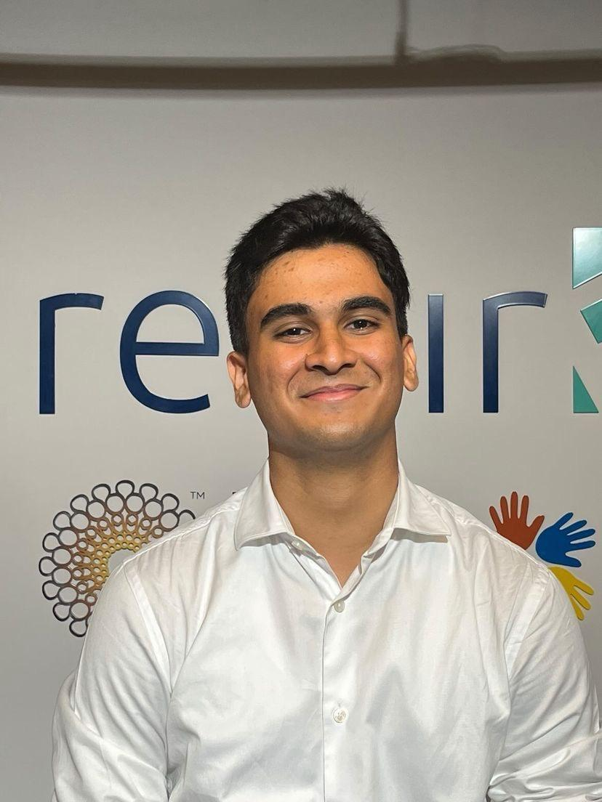

Manufacturing / Robotics
Precision, by design.
A custom fixture for the UR5e collaborative robot. Designed for repeatable positioning, robot accessibility, and a smoother assembly workflow.
SolidWorks · DFMA · PrototypingExplore project ↗MECHANICAL ENGINEERING · CLASS OF 2027
I'm Murtaza, a mechanical engineering student at UMass Amherst. I turn ideas into practical systems through CAD, analysis, and hands-on manufacturing.
01 / SELECTED WORK



THE ENGINEER BEHIND THE WORK02 / A LITTLE ABOUT ME
I enjoy turning ideas into real, testable designs. My work connects mechanical design, engineering analysis, and the practical constraints of making a part.
From team builds with ASME and Mass Mileage to machining and prototyping, I’m developing systems that are functional, thoughtful, and manufacturable.
BS Mechanical Engineering
Minor in Business · May 2027
Mechanical design · CAD / FEA
Manufacturing · Mechatronics